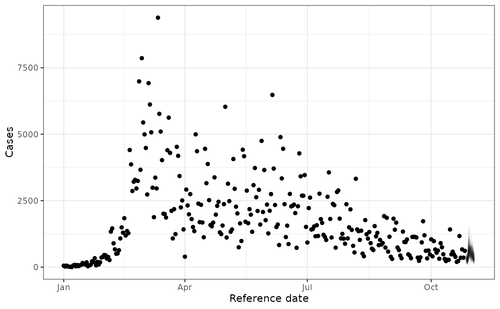

Generates predicted draws from predict.RtGam and plots them with ggplot2. See the documentation on predict.RtGam for options on how to specify draws.
Usage
# S3 method for class 'RtGam'
plot(x, parameter = "obs_cases", alpha = 0.05, ...)Arguments
- x
An
RtGamobject created using theRtGam()function.- parameter
A character string specifying the prediction target. Options are
"obs_cases"(observed cases),"r"(growth rate), or"Rt"(reproduction number). Default is"obs_cases".- alpha
The opacity of the lines on the plot. Should be between 0 and 1, with values closer to 0 producing more transparent lines.
- ...
Additional options to pass to
predict.RtGam()
Examples
fit <- RtGam(
stochastic_sir_rt[["obs_cases"]],
stochastic_sir_rt[["reference_date"]]
)
# Plot draws from the fitted model against the data
plot(fit)
# Plot a 7-day forecast
plot(fit, horizon = 7)

# Plot Rt estimates
plot(fit,
parameter = "Rt",
mean_delay = 0,
gi_pmf = sir_gt_pmf
)
# Add ggplot2 elements to a plot object
library(ggplot2)
plot(fit) +
labs(title = "An RtGam plot")